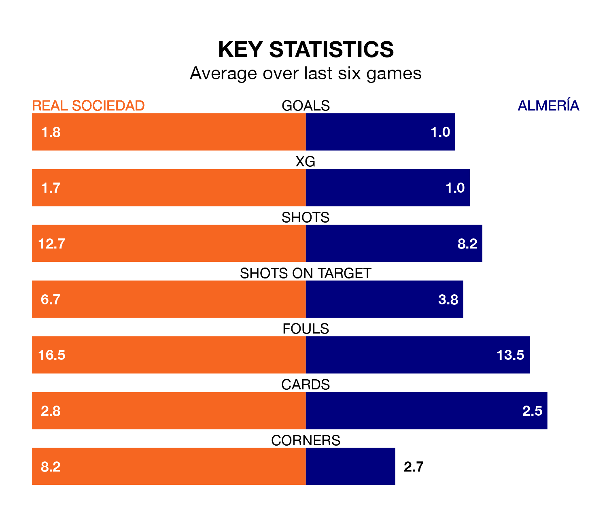

Real Sociedad are heavy favourites to keep all three points at home in Sunday's late kick-off against Almería.
La Real, who sit sixth in La Liga with 30 games played, are priced at 1.3 to seal victory at the Reale Arena.
Sitting 14 places and 36 points behind them in the table, Almería are 9.2 to win with *Betting Company*, while the draw is at 4.8.
With Álex Remiro between the sticks, La Real can rely on one of the league's safest pair of hands. He has kept 12 clean sheets in his 29 appearances this season, and only one other 'keeper – Athletic Club Bilbao's Unai Simón – has been able to prevent the opposition scoring on more occasions in La Liga.
In Almería's net, Luís Maximiano has five clean sheets in 27 games. He has conceded a goal every 53 minutes, more than twice as often as the 116 minutes between goals for Remiro Gargallo.
With 28 goals in 30 games so far this season, the away team are scoring at below the league average rate with 0.9 goals per game. And they are conceding more than average, letting in 60 goals at a rate of 2.0 per game.
La Real, meanwhile, are above average scorers, with 1.4 goals per game, compared to a league average of 1.3. They have conceded 1.0 goal per game.
The hosts are in reasonable form in La Liga, with four wins and two losses from their last six games.
With a win and three draws over that period, Almería's form is much worse – they have taken six points from 18, compared to La Real's 12.
In the last three years, La Real and Almería have played each other on three occasions. La Real won all of them.
Their last meeting was on November 11, when La Real won 3-1 away.
La Real's last match was on March 31, a 1-0 win against Deportivo Alavés, with Jon Pacheco getting the goal for la Real.
Almería lost 3-0 against CA Osasuna last time out, on March 30.
Sunday's match will be refereed by Isidro Díaz de Mera Escuderos, who has taken charge of 13 La Liga games so far this season, issuing three red cards and booking 67 players. He has awarded three penalties.
The last La Real game Díaz de Mera Escuderos refereed was a 1-0 home loss to CA Osasuna on February 10. His last Almería match was their 3-1 loss at home against Real Sociedad on November 11.
Updated: 10:01 (UTC), 12/04/24